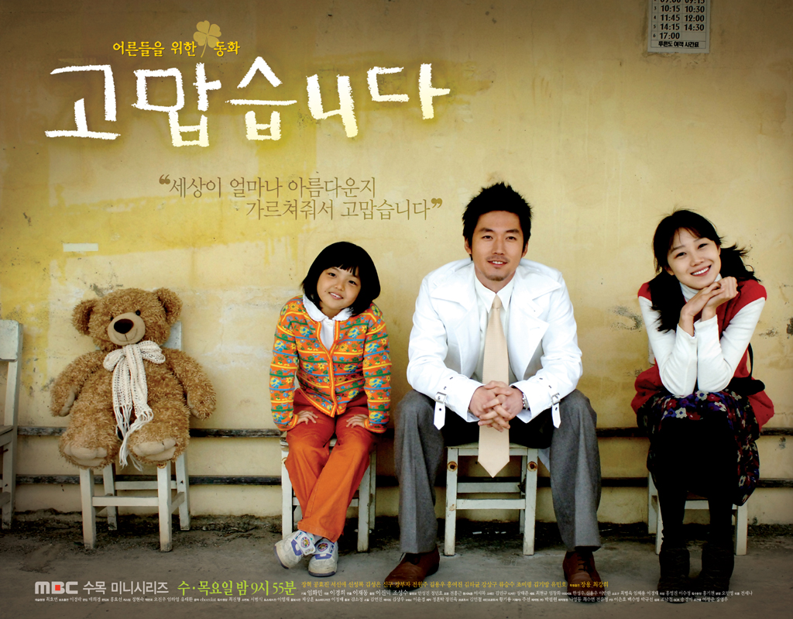
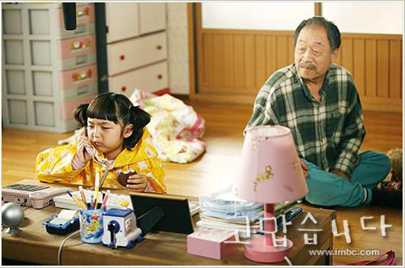

고맙습니다 어른들을 위한 동화
내가 엎어졌을 때 달려와 일으켜주고, 울고 있을 때 눈물도 닦아주고,
어두운 밤길을 갈 때 핸드폰 불빛으로 길도 밝혀주고,
아이스크림도 같이 먹어주고, 비빔밥도 같이 먹어주고,
내 손도 따뜻하게 잡아주고, 내 입술에 입맞춤도 해준 할아버지, 할머니, 아저씨, 아줌마, 아빠, 엄마, 오빠, 언니, 누나, 내 친구…
모두 모두 고맙습니다.
고맙습니다 드라마 | 대한민국
평점 9.3 / 10
정보 : MBC | 수, 목 드라마 | 2007-03-21 ~ 2007-05-10 방송종료
출연 : 장혁, 공효진, 서신애, 신성록, 신구
이경희 (극본), 이재동 (연출)
평균 시청률 : 16.4% (AGB 시청률 - 전국)

|  |
이 드라마에는 수혈 때문에 에이즈에 걸린 한 아이와 그아이의 엄마(?), 그아이의 아버지, 치매가 걸린 할아버지 그리고 사랑하는 여인을 잃어버린 의사와 그와 반대로 삶에 정면으로 부딪혀 사는 그 아이의 엄마(?)를 보면서 서로서로 치료해가며 사랑을 꽃피운다는 내용 같은데…. 제가 보기에는 에이즈에 대한 이야기와 섬을 둘러싼 아름다운 영상과 함께 눈과 감성을 같이 즐겁게 하는 드라마의 소개처럼 <어른들을 위한 동화 ‘고맙습니다’> 같습니다.
의학 | 참고사항
| 수혈 때문에 에이즈에 걸린 이봄(서신애) | |
- 정의
- 후천성 면역결핍 증후군(일반적으로는 ‘에이즈 (AIDS)라고 함)는 정상적으로 박테리아, 바이러스, 다른 병균들에 대항하여 신체를 보호하는 것을 돕는 백혈구의 한 그룹인 CD4(T-세포) 림프구를 파괴함으로써 신체의 면역 방어체계를 약화시킵니다. 인간면역결핍 바이러스가 CD4 림프구를 파괴하면 신체는 많은 다른 종류의 감염들에 취약해집니다. 이들 감염들은 면역 방어체계가 약해지면 신체에 침입하는 기회를 갖기 때문에 기회감염이라고 불립니다. 인간면역결핍 바이러스 감염은 또한 어떤 종류의 암, 뇌와 신경계 질환의 발생… 더보기
- 증상
- 감염의 초기 단계에서는 인간면역결핍 바이러스 감염이 증상을 일으키지 않거나 또는 발열, 인후통, 피부 발진, 구역, 구토, 설사, 피로감, 림프절 종대, 근육통, 두통, 관절통 등의 증상을 보이는 독감과 유사한 증상들을 일으킬 뿐입니다. 인간면역결핍 바이러스에 감염된 사람들의 50-90%가 감염된 후 첫 수 주일 이내에 이러한 증상들을 경험하지만 대부분의 사람들과 의사들은 이와 같은 증상들을 단순하게 흔한 감기나 독감으로 생각하게 됩니다. 감염 초기에 소수의 경우에서만 입원 치료가 필요한 뇌막염(뇌를 둘러싸고 있는… 더보기
- 진단
- 에이즈 진단을 위해 의사는 이전의 성교 파트너들, 정맥 약물 남용과 수혈 여부 및 직업적으로 혈액에 노출되지는 않았는지 등의 가능성 있는 인간면역결핍 바이러스 감염의 위험 인자들에 대해서 질문을 할 것입니다. 또한, 발열, 체중 감소, 근육통과 관절통, 피로감과 두통과 같은 다양한 증상들, 그리고 피부 발진이나 감염증, 부비동염, 폐렴, 곰팡이 감염들과 같은 의학적인 문제들이 이전에 있었는지에 대해서 확인할 것 입니다. 이후 전신적인 신체 검사를 시행받게 됩니다. 신체검사 중에 의사는 일명 ‘아구창’이라고 불리는 … 더보기
- 치료
- 인간면역결핍 바이러스 감염에 대항하기 위해 고강도 항레트로바이러스 치료 (HAART)라고 불리는 약제 병합요법을 시행할 수 있습니다. 의사들은 여러 가지 약제들을 동시에 사용함으로써(흔히 칵테일 요법이라고 불림) 여러 측면에서 인간면역결핍 바이러스를 공격하여 에이즈 치료의 효율성이 증가되기를 기대합니다. 약제 병합 사용은 또한 인간면역결핍 바이러스가 약제에 내성을 가져서 약제들의 효과를 없게 할 수 있는 위험을 최소화합니다. 많은 연구들을 통해 혈액 내의 바이러스 양이 많은 사람들은 에이즈로 더 빠르게 진행한다는 … 더보기
- 예방
- 인간면역결핍 바이러스 감염은 다음과 같은 경로로 사람과 사람 사이에서 전파될 수 있습니다. • 감염에 대한 보호가 이루어지지 않은 상태에서의 성관계(이성 간, 또는 동성 간) • 감염된 사람과의 구강 성교 • 바이러스에 오염된 혈액 수혈(혈액 공급 제제들에 대하여 인간면역결핍 바이러스 감염 여부를 검사하기 시작한1985년 이래로 미국에서는 매우 드물게 발생합니다.) • 주사 바늘 공유(한 정맥 약물 남용자가 감염되어 있는 경우) • 직업적 노출(감염된 혈액이 묻어 있는 바늘에 찔린 경우) • 감염된 정액으로 시행한… 더보기
- 예후
- 고강도 항레트로바이러스 치료를 시행받지 않는 사람에서 인간면역결핍 바이러스 감염부터 에이즈까지 진행되는데 소요되는 평균 시간은 10~11년 입니다. 하지만 인간면역결핍 바이러스에 감염된 사람의 약 20%(대개는 혈액내에 바이러스 양이 매우 많은 사람)는 더 빨리(감염 이후 5년 이내) 에이즈가 발생합니다. 약 2%에서는 평균보다 더 늦게(감염되고 나서 12년 이상 후에) 에이즈가 발생합니다. 일단 인간면역결핍 바이러스 감염이 에이즈로 진행되었다면 사망의 위험이 증가하지만, 이는 사람에 따라서 매우 다양합니다. 예… 더보기
| 치매가 걸린 할아버지 이병국(신구) | ||
- 정의
- 치매란 여러 가지 원인에 의해 인지기능의 저하와 일상생활에 장애를 초래하는 상황을 의미합니다. 치매 환자의 초기 증세는 기억력 감퇴로 시작하여 점차 기본적인 일상생활의 동작에도 영향을 주게 됩니다. 전형적으로 수 개월에서 수 년에 걸쳐 서서히 진행하는데 첫 증상은 경미하지만 나중에는 결국 심각한 기억력 소실을 가져옵니다. 또 의사소통이나 다른 사람을 알아보는데 어려움을 느끼며 복잡한 일을 수행하거나 판단능력의 저하도 나타납니다. 치매를 유발하는 병은 뉴런이라 부르는 뇌의 신경 세포가 퇴화하고 뉴런 사이의 연결이 … 더보기
- 증상
- 치매 증상은 서서히 나타나 점차 악화되면서 기능적 능력을 제한합니다.첫 증상은 기억력 감퇴입니다. 사람이면 누구나 때때로 기억을 잃어버리지만 치매 환자의 기억 소실은 훨씬 심하며 기능적 능력에 영향을 끼칩니다. 예를 들어 자동차키를 어디에 두었는지 잊어버리는 것은 정상이지만 자동차키를 어떻게 사용하는지 잊어버리는 것은 치매 증상일 수 있습니다.치매를 가진 사람은 때때로 무언가 이상하다고 느끼지만 두려움에 치료받는 것을 꺼립니다. 병이 악화되면서 환자는 증상에 대해 신경질적이거나 우울해지거나 불안해 합니다.기억력 감… 더보기
- 진단
- 치매의 원인을 진단하는 첫 단계는 환자의 병력을 살펴보고 언제 기억력 문제가 시작되었는지, 증상이 얼마나 빠르게 진행되고 있는지 확인하는 일입니다. 이 같은 정보는 환자의 나이와 함께 병을 진단하는 중요한 정보가 됩니다. 환자가 고령이며 수 년 간 일관되게 기억을 포함한 인지기능이 서서히 나빠진다면 알츠하이머병을 의심할 수 있습니다. 증상이 빠르게 악화된다면 크로이츠펠트-야콥병일 가능성도 있습니다. 고혈압, 당뇨, 혈관성 질환이 있으며 국소신경학적 증상이 급속하에 나타난다면 혈관성 치매를 의심해야 합니다. 치매 … 더보기
- 치료
- 비타민B12나 갑상선호르몬 결핍으로 인한 치매는 회복이 가능한 경우입니다. 이 질환들에 대한 치료가 치매를 호전시킵니다. 알코올 남용, 우울증, 불면증 등의 증상도 치료하면 증상을 호전시킬 수 있습니다. 혈관성 치매의 경우 혈압 조절, 금연, 저밀도 지질 단백질(나쁜 콜레스테롤) 낮추기, 정기적 운동, 이상 체중 유지 등으로 지적 감퇴를 늦출 수 있습니다.경우에 따라 알츠하이머병에 대한 약물치료가 행동증상과 지능 감퇴 및 요양원 치료시기를 늦추는 데 도움이 됩니다. 도네페질(donepezil, 상품명: 아리셉트),… 더보기
- 예방
- 치매의 원인 중 대부분은 예방할 수 없지만 개인의 건강 습관이나 의학적 관리가 뛰어나다면 예방이 가능한 경우도 있습니다. • 뇌졸중에 의한 치매 – 혈압조절, 매일 운동하기, 과일과 채소를 많이 먹고 균형 잡힌 식이로 이상 체중을 유지하기• 술과 연관된 치매 – 술의 양을 조절하기• 외상성 치매 – 안전벨트, 헬멧, 보호구를 사용해 두부 손상에 대비하기 • 비타민 결핍 치매 – 특히 비타민B12 같은 충분한 B군 비타민 섭취하기. 피검사로 확인 가능• 호르몬 연관 치매 – 갑상선이 적절하게 기능하는지 갑상선자극호… 더보기
- 예후
- 치매의 예후는 원인에 따라 개인마다 틀립니다. 예를 들어 비타민 결핍성 치매는 조기에 치료할 경우 완전한 기억 회복을 가져옵니다. 뇌졸중이 원인이라면 기억력 소실은 수 년 동안 안정적인 양상을 보입니다. 어떤 알츠하이머병 환자의 경우 약물이 퇴행 속도를 늦출 수 있습니다. 그러나 대부분 악화됩니다. 환자의 원인, 나이, 건강, 치료 등에 따라 여명은 수 개월로 짧을 수도, 15~20년까지 길어질 수도 있습니다.
| 췌장암에 걸린 차지민(최강희) | |
- 정의
- 췌장 조직의 비정상적인 세포 성장입니다. 췌장은 약 6인치의 길이로 위장 뒤의 소장 옆에 위치합니다. 이 장기는 몸에서 2가지 주요한 기능을 제공합니다. 췌장은 음식의 소화와 흡수를 도와주기 위한 체액과 효소를 생산합니다. 또한 인슐린(Insulin)과 같은 여러 가지 호르몬을 생산하여 음식을 저장하고 처리하는 것을 조절합니다.모든 췌장암의 약 95%는 소화액을 생산하는 췌장(외분비성 췌장)에서 발생합니다. 나머지 5%는 호르몬을 생산하는 췌장(내분비성 췌장)에서 발생합니다. 이 다른 종류의 종양은 매우 상이 합니… 더보기
- 증상
- 초기 췌장암 환자들은 특별한 증상을 가지고 있지 않습니다. 증상이 발생했을 때, 그것들은 위나 장, 간과 담낭 같은 다른 소화 기관과 비슷합니다. 가장 많은 증상들은 통증, 체중 감소와 황달이 있다면 피부색이 노란색이 됩니다. 우리 몸이 오래되고 소모된 적혈구를 파괴하면서; 간은 적혈구의 색소들을 담즙을 통해 결국 소장의 소화관으로 배출합니다. 이런 배출이 일어나는 해부학적 위치는 췌장의 주요부위 근위부에 가까이 있습니다. 따라서 췌장 증대로 인해서 봉쇄가 있으면, 담즙을 포함한 색소는 피부나 눈과 같은 다른 조직… 더보기
- 진단
- 췌장암을 선별 검사하는 효과적인 방법은 없습니다. 췌장은 다른 많은 장기로부터 숨어 있기 때문에 암을 발견하는 것은 어렵습니다. 암의 초기 단계에 증상이 거의 없기 때문에, 불행히도 처음 진단되었을 때에 암은 진행된 상태에 도달하게 됩니다.만약 췌장암의 증상들이 있다면 의사는 병력에 대해 물어볼 것이고, 다른 가능한 원인을 찾기 위해 진단적 검사들을 시행할 것입니다. 이런 진단적 검사들은 다음과 같습니다.: 기본혈액검사(Routine laboratory tests) – 기본혈액검사는 간기능을 측정할 수 있고, 증상… 더보기
- 치료
- 의사가 췌장암을 진단한 후에는, 췌장암이 얼마나 진행 되었는지 결정하기 위해 더 많은 검사들을 시행할 것이고, 그에 따라 병기(Stage)가 결정 됩니다. 치료는 암의 병기(Stage)에 달려 있습니다.수술은 췌장의 전체나 일부, 악성화 하는 주위 조직을 제거하게 됩니다. 또, 의사는 병의 증상을 조절하고 암세포를 죽이기 위하여 화학요법(항암제에 의한 치료)과 방사선 요법을 사용할 수도 있습니다. 어떤 경우에는 아직 일반화된 치료는 아니지만, 새로운 치료를 제공할 수도 있습니다. 이런 치료를 임상연구 혹은 임상실험… 더보기
- 예방
- 췌장암을 예방하는 방법은 없습니다. 또한, 췌장암을 선별 검사하는 방법도 없어서, 가능하면 빨리 발견해서 조기에 치료를 할 수 있어야 합니다. 흡연이 췌장암과 관련된 가장 중요한 위험인자이기 때문에, 금연을 하거나, 아예 흡연을 시작하지 않는 것이 중요합니다. 일반적으로 암을 피하기 위해 과일과 야채, 섬유질을 섭취하는 것이 추천됩니다.
- 예후
- 췌장암은 매우 심각한 질환으로 사망률이 높습니다. 회복의 기회는 환자의 나이나, 진단된 당시 암의 진행 정도, 전반적인 건강 상태, 치료의 효과에 달려 있습니다.췌장암 환자의 약 19%가 진단 후 최소한 1년간 생존합니다. 하지만 췌장암 환자의 5년 생존률은 단지 1~2%입니다.
제공 : 비타민MD
| 초코파이를 나누어주는 장면 | |
영화보다 더 아름다운 영상에, 푸른도라는 배경. 그 안에 미운 캐릭터 하나 없이 하나같이 순수하고 가슴 따뜻한 등장인물들. 할아버지가 마지막에 초코파이를 나누어 주는 모습까지도 마음에 남아 보는 내내 마음이 흐뭇했습니다.
<고맙습니다>의 원래 제목은 <우리들이 있었다>였다는데 장혁씨의 제안으로 <고맙습니다>로 바꿨다고 하더군요.